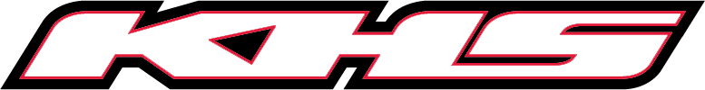

Specialized Bicycles is a major American brand of bicycles and related products.
It was founded in 1974 by Mike Sinyard.
Many riders use Specialized Bicycles in the North American and European professional cycling circuits
The company was founded in 1978 by Bob Haro, who began by producing number plates for BMX bikes in his home.
Demand for the plates quickly outgrew his one-man capacity and as the company grew, Haro helped develop the sport of freestyle BMX
KHS has been producing high quality bicycles for cyclists in all parts of the world since 1974.
From our first day in business, KHS has always delivered a unique blend of styling, performance and excellent consumer valueSanta Cruz Bicycles was founded in 1993 in the Seabright Cannery, in Santa Cruz California. Their first bike, the Tazmon, was a single pivot dual suspension bike that rattled established sensibilities and helped define our then- ethos of "simply advanced"Norco Bicycles from British Columbia, Canada has grown into a global company delivering superior cycling experiences to everyone, everywhere. With nearly 50 years as a leader in the industry, our success is built on an unwavering commitment to listen, innovate and ride